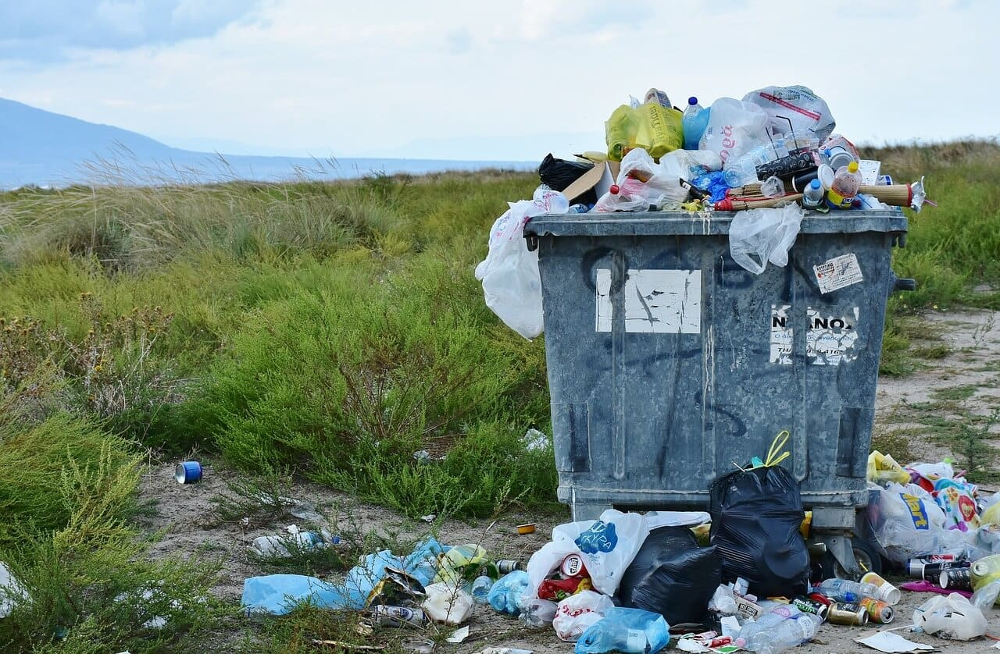

O consumo excessivo de plástico tem se tornado uma preocupação global devido aos seus impactos negativos no meio ambiente, felizmente, existem diversas ações que cada um de nós pode tomar para reduzir o consumo de plástico em nosso dia a dia, pequenas mudanças em nossos hábitos podem ter um grande impacto e contribuir para a preservação do planeta, neste artigo, vamos apresentar 10 maneiras simples de reduzir o consumo de plástico, destacando as ações que podemos tomar para transformar o mundo em um lugar mais sustentável.
O uso de sacolas plásticas é uma das principais fontes de poluição por plástico, substituir as sacolas descartáveis por sacolas reutilizáveis é uma forma simples de reduzir o consumo de plástico, tenha sempre algumas sacolas reutilizáveis à mão quando for às compras.
Em vez de comprar água em garrafas plásticas descartáveis, prefira utilizar uma garrafa reutilizável, há uma grande variedade de opções no mercado, desde garrafas de vidro até garrafas de aço inoxidável, além de reduzir o consumo de plástico, você também economizará dinheiro a longo prazo.
Talheres, copos, pratos e outros utensílios descartáveis contribuem significativamente para a poluição por plástico, opte por utilizar utensílios duráveis, como talheres de metal e pratos de cerâmica, em vez de produtos descartáveis, caso seja necessário utilizar produtos descartáveis, procure opções biodegradáveis feitas de materiais sustentáveis.
Os canudos de plástico são um dos itens mais comuns encontrados em praias e oceanos, recuse canudos de plástico sempre que possível e opte por canudos reutilizáveis feitos de materiais como aço inoxidável, vidro ou bambu, caso você realmente precise de um canudo, considere beber diretamente do copo.
Em vez de comprar produtos embalados individualmente, opte por comprar a granel, dessa forma, você reduzirá a quantidade de plástico utilizado na embalagem dos produtos, leve sacos reutilizáveis ou recipientes próprios para armazenar os itens comprados a granel.
Quando for comprar produtos embalados, verifique se as embalagens são feitas de materiais sustentáveis, como papel reciclado ou plástico biodegradável, dê preferência a marcas que estão comprometidas com a redução do impacto ambiental de suas embalagens.
Comer fora frequentemente pode resultar em uma grande quantidade de embalagens plásticas, uma maneira de reduzir o consumo de plástico é preparar sua própria comida em casa, além de ser mais saudável, você terá controle sobre os materiais de embalagem utilizados.
Muitos produtos de higiene pessoal, como escovas de dentes, cotonetes e embalagens de xampu, são feitos de plástico, opte por produtos de higiene pessoal sustentáveis, como escovas de dente de bambu, cotonetes de papel e xampus em barra, que geralmente vêm em embalagens de papel.
Quando estiver fazendo compras, evite embalagens plásticas desnecessárias, por exemplo, se você comprar frutas e legumes, não é necessário colocá-los em sacolas plásticas individuais, leve suas próprias sacolas reutilizáveis e coloque os produtos diretamente nelas.
Participar de iniciativas de limpeza em praias, parques e outros ambientes naturais é uma forma de combater a poluição por plástico de maneira direta, junte-se a grupos locais ou organize sua própria iniciativa de limpeza para conscientizar as pessoas sobre a importância de preservar o meio ambiente.
Reduzir o consumo de plástico no dia a dia é uma responsabilidade de todos, ao implementar essas 10 maneiras simples em nossas rotinas, podemos fazer a diferença e transformar o mundo em um lugar mais sustentável, cada ação conta, e é necessário conscientizar e inspirar outras pessoas a adotarem essas mudanças, juntos, podemos contribuir para a preservação do meio ambiente e criar um futuro mais limpo e saudável para as gerações futuras.